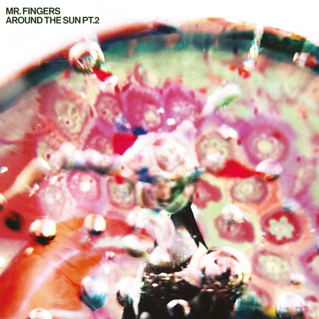

Mr Fingers - Around the Sun Pt2



Información del álbum facilitada por discogs.com:
Fecha de lanzamiento: 2023
Géneros: Electronic
Estilos: House, Deep House, Downtempo
Tracklist:
A1. We’re Drowning (feat. David Brown (37) & Larry Heard)
A2. Tekjazz (feat. Larry Heard)
B1. Love To You (feat. Larry Heard)
B2. Country Rhodes (feat. Larry Heard)
B3. Touch Of Love (feat. Larry Heard)
C1. Rustling Leaves (feat. Larry Heard)
C2. The Icy Air Of Night (feat. Larry Heard)
D1. Invisible (feat. Larry Heard)
D2. Forcefield (feat. Larry Heard)
D3. Supa Kool (feat. Larry Heard)